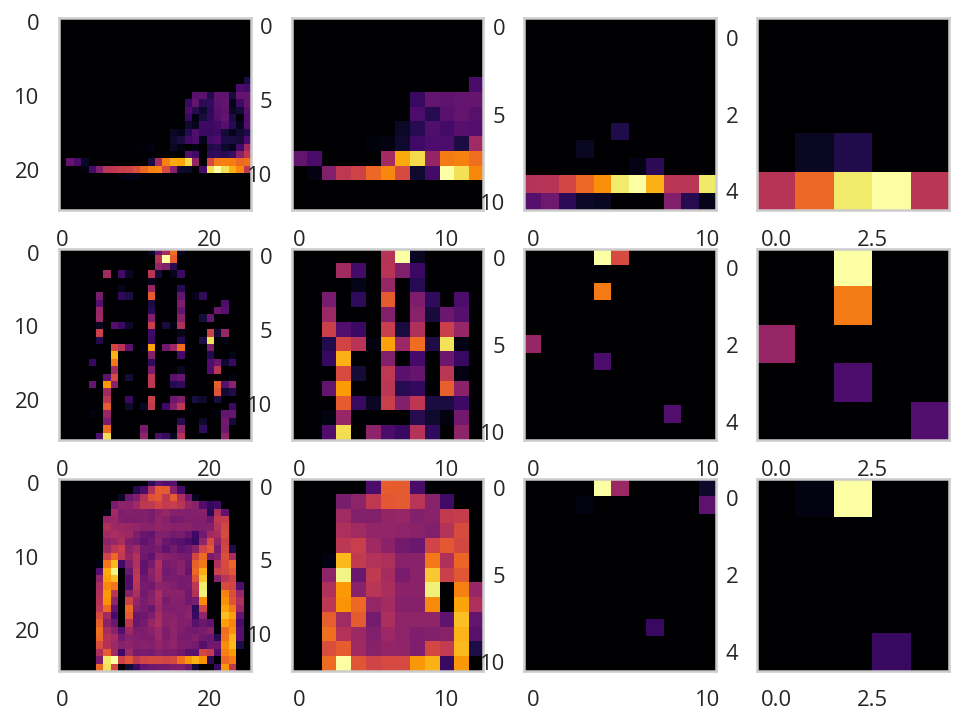

Convolutional Neural Networks and Fashion MNIST
Table of Contents
Beginning
The goal of this exercise is to create a model that can classify the Fashion MNIST data better than our previous single hidden-layer model.
Imports
PyPi
import matplotlib.pyplot as pyplot
import numpy
import seaborn
import tensorflow
My Stuff
from graeae.timers import Timer
Set Up
The Timer
TIMER = Timer()
The Data
(training_images, training_labels), (testing_images, testing_labels) = (
tensorflow.keras.datasets.fashion_mnist.load_data())
training_images = training_images / 255
testing_images = testing_images / 255
Plotting
Middle
Some Exploratory Work
A Baseline Model
Our baseline that we want to beat is a model with a single dense hidden layer with 128 nodes.
model = tensorflow.keras.models.Sequential()
model.add(tensorflow.keras.layers.Flatten())
model.add(tensorflow.keras.layers.Dense(128, activation=tensorflow.nn.relu))
model.add(tensorflow.keras.layers.Dense(10, activation=tensorflow.nn.softmax))
model.compile(optimizer="adam", loss="sparse_categorical_crossentropy",
metrics=["accuracy"])
with TIMER:
model.fit(training_images, training_labels, epochs=10, verbose=2)
loss, accuracy = model.evaluate(testing_images, testing_labels, verbose=0)
print(f"Testing Loss: {loss:.2f} Testing Accuracy: {accuracy: .2f}")
WARNING: Logging before flag parsing goes to stderr. W0703 11:50:56.498819 140182964418368 deprecation.py:506] From /home/brunhilde/.virtualenvs/In-Too-Deep/lib/python3.7/site-packages/tensorflow/python/ops/init_ops.py:1251: calling VarianceScaling.__init__ (from tensorflow.python.ops.init_ops) with dtype is deprecated and will be removed in a future version. Instructions for updating: Call initializer instance with the dtype argument instead of passing it to the constructor 2019-07-03 11:50:56,502 graeae.timers.timer start: Started: 2019-07-03 11:50:56.502607 I0703 11:50:56.502984 140182964418368 timer.py:70] Started: 2019-07-03 11:50:56.502607 Epoch 1/10 60000/60000 - 5s - loss: 0.4973 - acc: 0.8252 Epoch 2/10 60000/60000 - 5s - loss: 0.3742 - acc: 0.8656 Epoch 3/10 60000/60000 - 5s - loss: 0.3382 - acc: 0.8775 Epoch 4/10 60000/60000 - 5s - loss: 0.3146 - acc: 0.8839 Epoch 5/10 60000/60000 - 4s - loss: 0.2976 - acc: 0.8897 Epoch 6/10 60000/60000 - 4s - loss: 0.2818 - acc: 0.8963 Epoch 7/10 60000/60000 - 4s - loss: 0.2707 - acc: 0.9002 Epoch 8/10 60000/60000 - 5s - loss: 0.2597 - acc: 0.9039 Epoch 9/10 60000/60000 - 5s - loss: 0.2502 - acc: 0.9066 Epoch 10/10 60000/60000 - 5s - loss: 0.2409 - acc: 0.9094 2019-07-03 11:51:42,904 graeae.timers.timer end: Ended: 2019-07-03 11:51:42.904683 I0703 11:51:42.904865 140182964418368 timer.py:77] Ended: 2019-07-03 11:51:42.904683 2019-07-03 11:51:42,907 graeae.timers.timer end: Elapsed: 0:00:46.402076 I0703 11:51:42.907317 140182964418368 timer.py:78] Elapsed: 0:00:46.402076 Testing Loss: 0.36 Testing Accuracy: 0.87
A Convolutional Neural Network
The convolutional layer expects a single tensor instead of a feed of many of them so you need to reshape the input to make it work.
training_images = training_images.reshape(60000, 28, 28, 1)
testing_images = testing_images.reshape(10000, 28, 28, 1)
Our model starts with a Conv2D layer. The arguments we're using are:
filters: the dimensionality of the output space (the number of output filters in the convolution)kernel_size: The height and width of the convolution windowactivation: The activation function for the outputinput_shape: If this is the first layer in the model you have to tell it what the input shape is
The output of the convolutional layers go to a MaxPool2D layer. The only argument we're passing in is pool_size, the factors by which to downsize the input. Using (2, 2) will reduce the size in half. After the convolutions and pooling are applied, the output is sent through a version of the fully-connected network that we were using before (see the baseline model above).
- A Model Builder
Something to make it a little easier to re-use things. Note that in the original notebook the first example has 64 filters in the CNN, but later it says that it's better to start with 32 (and the exercises expect that you used 32) so I'm using that as the default value.
def get_stop(loss=0.02): class Stop(tensorflow.keras.callbacks.Callback): def on_epoch_end(self, epoch, logs={}): if (logs.get("loss") < loss): print(f"Stopping point reached at epoch {epoch}") self.model.stop_training = True stop = Stop() return stop
class ModelBuilder: """Builds, trains, and tests our model Args: training_images: images to train on training_labels: labels for the training data testing_images: images to test the trained model with testing_labels: labels for the testing data additional_convolutions: convolutions besides the input convolution epochs: number of times to repeat training filters: number of filters in the output of the convolutional layers use_callback: use the Stop to end trainig callback_loss: loss to use for the callback """ def __init__(self, training_images: numpy.ndarray=training_images, training_labels: numpy.ndarray=training_labels, testing_images: numpy.ndarray=testing_images, testing_labels: numpy.ndarray=testing_labels, additional_convolutions: int=1, epochs: int=10, filters: int=32, use_callback: bool=False, callback_loss: float=0) -> None: self.training_images = training_images self.training_labels = training_labels self.testing_images = testing_images self.testing_labels = testing_labels self.additional_convolutions = additional_convolutions self.epochs = epochs self.filters = filters self.use_callback = use_callback self.callback_loss = callback_loss self._model = None self._callback = None return @property def callback(self) -> Stop: """The callback to stop the training""" if self._callback is None: self._callback = get_stop(self.callback_loss) return self._callback @property def model(self) -> tensorflow.keras.models.Sequential: """Our CNN Model""" if self._model is None: self._model = tensorflow.keras.models.Sequential() self._model.add(tensorflow.keras.layers.Conv2D( self.filters, (3, 3), activation="relu", input_shape=(28, 28, 1))) self._model.add(tensorflow.keras.layers.MaxPooling2D(2, 2)) for convolution in range(self.additional_convolutions): self._model.add(tensorflow.keras.layers.Conv2D(self.filters, (3, 3), activation="relu")) self._model.add(tensorflow.keras.layers.MaxPooling2D(2, 2)) self._model.add(tensorflow.keras.layers.Flatten()) self._model.add(tensorflow.keras.layers.Dense(128, activation="relu")) self._model.add(tensorflow.keras.layers.Dense(10, activation="softmax")) self._model.compile(optimizer="adam", loss="sparse_categorical_crossentropy", metrics=["accuracy"]) return self._model def print_summary(self): """Print out the summary for the model""" print(self.model.summary()) return def fit(self): """ Fit the model to the training data """ if self.use_callback: self.model.fit(self.training_images, self.training_labels, epochs=self.epochs, verbose=2, callbacks=[self.callback]) else: self.model.fit(self.training_images, self.training_labels, epochs=self.epochs, verbose=2) return def test(self) -> tuple: """Check the loss and accuracy of the model against the testing set Returns: (loss, accuracy): the output of the evaluation of the testing data """ return self.model.evaluate(self.testing_images, self.testing_labels, verbose=0) def __call__(self): """Builds and tests the model""" self.fit() loss, accuracy = self.test() print(f"Testing Loss: {loss:.2f} Testing Accuracy: {accuracy:.2f}") return
# model = create_model() builder = ModelBuilder(epochs=5) builder.print_summary()
Model: "sequential_17" _________________________________________________________________ Layer (type) Output Shape Param # ================================================================= conv2d_32 (Conv2D) (None, 26, 26, 32) 320 _________________________________________________________________ max_pooling2d_32 (MaxPooling (None, 13, 13, 32) 0 _________________________________________________________________ conv2d_33 (Conv2D) (None, 11, 11, 32) 9248 _________________________________________________________________ max_pooling2d_33 (MaxPooling (None, 5, 5, 32) 0 _________________________________________________________________ flatten_17 (Flatten) (None, 800) 0 _________________________________________________________________ dense_34 (Dense) (None, 128) 102528 _________________________________________________________________ dense_35 (Dense) (None, 10) 1290 ================================================================= Total params: 113,386 Trainable params: 113,386 Non-trainable params: 0 _________________________________________________________________ None
Layer By Layer
- Our input is a set of 28 x 28 images.
- Because we didn't pad the images, the convolutional layer "trims" off one row and column on each side (the center cell can't reach the outermost cells) so we get a 26 x 26 grid with 64 filters (which is what we set up in the definition).
- The Max Pooling layer the halves the image so we have 13 x 13 grid with 64 filters
- The next convolution layer once again trims off one row on each side so we have a 11 x 11 grid with 64 filters
- Then the Max Pooling halves the grid once again so we have a 5 x 5 grid with 64 filters
- The Flatten layer outputs a vector with 1,600 cells (5 x 5 x 64 = 1,600).
- The first Dense layer has 128 neurons in it so that's the size of the output
- And the final Dense layer converts it to 10 outputs to match the number of labels we have
builder()
Epoch 1/5 60000/60000 - 17s - loss: 0.4671 - acc: 0.8290 Epoch 2/5 60000/60000 - 17s - loss: 0.3149 - acc: 0.8844 Epoch 3/5 60000/60000 - 17s - loss: 0.2688 - acc: 0.9003 Epoch 4/5 60000/60000 - 17s - loss: 0.2414 - acc: 0.9112 Epoch 5/5 60000/60000 - 17s - loss: 0.2175 - acc: 0.9198 Testing Loss: 0.28 Testing Accuracy: 0.89
Using the Convolutional Neural Network we've gone from 88% to 91% accuracy.
10 Epochs
Using five epochs it appears that the loss is still going down while the accuracy is going up. What happens with ten epochs?
builder_10 = ModelBuilder(epochs=10)
builder_10()
Epoch 1/10 60000/60000 - 16s - loss: 0.4807 - acc: 0.8242 Epoch 2/10 60000/60000 - 16s - loss: 0.3233 - acc: 0.8825 Epoch 3/10 60000/60000 - 15s - loss: 0.2776 - acc: 0.8976 Epoch 4/10 60000/60000 - 16s - loss: 0.2474 - acc: 0.9082 Epoch 5/10 60000/60000 - 16s - loss: 0.2273 - acc: 0.9155 Epoch 6/10 60000/60000 - 16s - loss: 0.2030 - acc: 0.9240 Epoch 7/10 60000/60000 - 16s - loss: 0.1854 - acc: 0.9314 Epoch 8/10 60000/60000 - 16s - loss: 0.1693 - acc: 0.9361 Epoch 9/10 60000/60000 - 15s - loss: 0.1540 - acc: 0.9419 Epoch 10/10 60000/60000 - 16s - loss: 0.1419 - acc: 0.9467 Testing Loss: 0.26 Testing Accuracy: 0.91
It looks like it's still learning.
15 Epochs
builder_15 = ModelBuilder(epochs=15)
builder_15()
Epoch 1/15 60000/60000 - 16s - loss: 0.4754 - acc: 0.8260 Epoch 2/15 60000/60000 - 16s - loss: 0.3155 - acc: 0.8834 Epoch 3/15 60000/60000 - 16s - loss: 0.2725 - acc: 0.9001 Epoch 4/15 60000/60000 - 16s - loss: 0.2447 - acc: 0.9096 Epoch 5/15 60000/60000 - 16s - loss: 0.2199 - acc: 0.9180 Epoch 6/15 60000/60000 - 16s - loss: 0.1996 - acc: 0.9248 Epoch 7/15 60000/60000 - 16s - loss: 0.1813 - acc: 0.9316 Epoch 8/15 60000/60000 - 16s - loss: 0.1666 - acc: 0.9372 Epoch 9/15 60000/60000 - 16s - loss: 0.1525 - acc: 0.9430 Epoch 10/15 60000/60000 - 15s - loss: 0.1374 - acc: 0.9484 Epoch 11/15 60000/60000 - 16s - loss: 0.1257 - acc: 0.9527 Epoch 12/15 60000/60000 - 15s - loss: 0.1135 - acc: 0.9569 Epoch 13/15 60000/60000 - 16s - loss: 0.1025 - acc: 0.9615 Epoch 14/15 60000/60000 - 15s - loss: 0.0937 - acc: 0.9647 Epoch 15/15 60000/60000 - 16s - loss: 0.0849 - acc: 0.9682 Testing Loss: 0.34 Testing Accuracy: 0.91
It looks like it's started to overfit, the accuracy is okay, but the loss is a little worse.
20 Epochs
builder = ModelBuilder(epochs=20)
builder()
Epoch 1/20 60000/60000 - 16s - loss: 0.4759 - acc: 0.8264 Epoch 2/20 60000/60000 - 16s - loss: 0.3218 - acc: 0.8822 Epoch 3/20 60000/60000 - 16s - loss: 0.2767 - acc: 0.8982 Epoch 4/20 60000/60000 - 16s - loss: 0.2469 - acc: 0.9083 Epoch 5/20 60000/60000 - 16s - loss: 0.2218 - acc: 0.9177 Epoch 6/20 60000/60000 - 16s - loss: 0.2015 - acc: 0.9244 Epoch 7/20 60000/60000 - 16s - loss: 0.1848 - acc: 0.9309 Epoch 8/20 60000/60000 - 15s - loss: 0.1698 - acc: 0.9361 Epoch 9/20 60000/60000 - 14s - loss: 0.1525 - acc: 0.9424 Epoch 10/20 60000/60000 - 15s - loss: 0.1435 - acc: 0.9457 Epoch 11/20 60000/60000 - 16s - loss: 0.1306 - acc: 0.9504 Epoch 12/20 60000/60000 - 15s - loss: 0.1172 - acc: 0.9556 Epoch 13/20 60000/60000 - 15s - loss: 0.1079 - acc: 0.9594 Epoch 14/20 60000/60000 - 15s - loss: 0.0993 - acc: 0.9626 Epoch 15/20 60000/60000 - 15s - loss: 0.0900 - acc: 0.9658 Epoch 16/20 60000/60000 - 15s - loss: 0.0829 - acc: 0.9686 Epoch 17/20 60000/60000 - 15s - loss: 0.0746 - acc: 0.9720 Epoch 18/20 60000/60000 - 16s - loss: 0.0713 - acc: 0.9736 Epoch 19/20 60000/60000 - 15s - loss: 0.0638 - acc: 0.9760 Epoch 20/20 60000/60000 - 15s - loss: 0.0594 - acc: 0.9781 Testing Loss: 0.45 Testing Accuracy: 0.91
It looks like it might be overfitting - both the loss and the accuracy went down a little.
Visualizing the Convolutions and Pooling
print(testing_labels[:100])
[9 2 1 1 6 1 4 6 5 7 4 5 7 3 4 1 2 4 8 0 2 5 7 9 1 4 6 0 9 3 8 8 3 3 8 0 7 5 7 9 6 1 3 7 6 7 2 1 2 2 4 4 5 8 2 2 8 4 8 0 7 7 8 5 1 1 2 3 9 8 7 0 2 6 2 3 1 2 8 4 1 8 5 9 5 0 3 2 0 6 5 3 6 7 1 8 0 1 4 2]
model = builder_10.model
figure, axis_array = pyplot.subplots(3,4)
FIRST_IMAGE=0
SECOND_IMAGE=7
THIRD_IMAGE=26
CONVOLUTION_NUMBER = 1
layer_outputs = [layer.output for layer in model.layers]
activation_model = tensorflow.keras.models.Model(inputs = model.input, outputs = layer_outputs)
for x in range(0,4):
f1 = activation_model.predict(testing_images[FIRST_IMAGE].reshape(1, 28, 28, 1))[x]
axis_array[0,x].imshow(f1[0, : , :, CONVOLUTION_NUMBER], cmap='inferno')
axis_array[0,x].grid(False)
f2 = activation_model.predict(testing_images[SECOND_IMAGE].reshape(1, 28, 28, 1))[x]
axis_array[1,x].imshow(f2[0, : , :, CONVOLUTION_NUMBER], cmap='inferno')
axis_array[1,x].grid(False)
f3 = activation_model.predict(testing_images[THIRD_IMAGE].reshape(1, 28, 28, 1))[x]
axis_array[2,x].imshow(f3[0, : , :, CONVOLUTION_NUMBER], cmap='inferno')
axis_array[2,x].grid(False)

Exercises
1. Try editing the convolutions. Change the 32s to either 16 or 64. What impact will this have on accuracy and/or training time.
- 16 Nodes
builder = ModelBuilder(filters=16) with TIMER: builder()
2019-07-03 12:06:27,700 graeae.timers.timer start: Started: 2019-07-03 12:06:27.700578 I0703 12:06:27.700625 140182964418368 timer.py:70] Started: 2019-07-03 12:06:27.700578 Epoch 1/10 60000/60000 - 17s - loss: 0.5169 - acc: 0.8100 Epoch 2/10 60000/60000 - 17s - loss: 0.3536 - acc: 0.8714 Epoch 3/10 60000/60000 - 17s - loss: 0.3075 - acc: 0.8873 Epoch 4/10 60000/60000 - 17s - loss: 0.2808 - acc: 0.8959 Epoch 5/10 60000/60000 - 16s - loss: 0.2590 - acc: 0.9027 Epoch 6/10 60000/60000 - 17s - loss: 0.2419 - acc: 0.9100 Epoch 7/10 60000/60000 - 17s - loss: 0.2276 - acc: 0.9156 Epoch 8/10 60000/60000 - 17s - loss: 0.2140 - acc: 0.9182 Epoch 9/10 60000/60000 - 17s - loss: 0.2030 - acc: 0.9233 Epoch 10/10 60000/60000 - 17s - loss: 0.1934 - acc: 0.9266 2019-07-03 12:09:18,226 graeae.timers.timer end: Ended: 2019-07-03 12:09:18.226577 I0703 12:09:18.226756 140182964418368 timer.py:77] Ended: 2019-07-03 12:09:18.226577 2019-07-03 12:09:18,229 graeae.timers.timer end: Elapsed: 0:02:50.525999 I0703 12:09:18.229464 140182964418368 timer.py:78] Elapsed: 0:02:50.525999 Testing Loss: 0.29 Testing Accuracy: 0.90
The smaller model had slightly more loss than the 32 node model as well as a little less accuracy.
- 64 Nodes
builder = ModelBuilder(filters=64) with TIMER: builder()
2019-07-03 12:09:19,711 graeae.timers.timer start: Started: 2019-07-03 12:09:19.711082 I0703 12:09:19.711113 140182964418368 timer.py:70] Started: 2019-07-03 12:09:19.711082 Epoch 1/10 60000/60000 - 19s - loss: 0.4367 - acc: 0.8428 Epoch 2/10 60000/60000 - 18s - loss: 0.2923 - acc: 0.8929 Epoch 3/10 60000/60000 - 18s - loss: 0.2472 - acc: 0.9087 Epoch 4/10 60000/60000 - 18s - loss: 0.2156 - acc: 0.9205 Epoch 5/10 60000/60000 - 18s - loss: 0.1893 - acc: 0.9298 Epoch 6/10 60000/60000 - 18s - loss: 0.1665 - acc: 0.9380 Epoch 7/10 60000/60000 - 18s - loss: 0.1460 - acc: 0.9456 Epoch 8/10 60000/60000 - 18s - loss: 0.1285 - acc: 0.9500 Epoch 9/10 60000/60000 - 18s - loss: 0.1142 - acc: 0.9568 Epoch 10/10 60000/60000 - 18s - loss: 0.0972 - acc: 0.9621 2019-07-03 12:12:23,275 graeae.timers.timer end: Ended: 2019-07-03 12:12:23.274851 I0703 12:12:23.275002 140182964418368 timer.py:77] Ended: 2019-07-03 12:12:23.274851 2019-07-03 12:12:23,277 graeae.timers.timer end: Elapsed: 0:03:03.563769 I0703 12:12:23.277686 140182964418368 timer.py:78] Elapsed: 0:03:03.563769 Testing Loss: 0.32 Testing Accuracy: 0.91
This has the same accuracy as the 32 node model but with a slight increase in the loss.
2. Remove the final Convolution. What impact will this have on accuracy or training time?
builder = ModelBuilder(additional_convolutions=0)
with TIMER:
builder()
2019-07-03 12:12:24,795 graeae.timers.timer start: Started: 2019-07-03 12:12:24.795249 I0703 12:12:24.795282 140182964418368 timer.py:70] Started: 2019-07-03 12:12:24.795249 Epoch 1/10 60000/60000 - 14s - loss: 0.3897 - acc: 0.8607 Epoch 2/10 60000/60000 - 14s - loss: 0.2642 - acc: 0.9042 Epoch 3/10 60000/60000 - 14s - loss: 0.2218 - acc: 0.9187 Epoch 4/10 60000/60000 - 14s - loss: 0.1883 - acc: 0.9306 Epoch 5/10 60000/60000 - 14s - loss: 0.1619 - acc: 0.9391 Epoch 6/10 60000/60000 - 14s - loss: 0.1387 - acc: 0.9482 Epoch 7/10 60000/60000 - 14s - loss: 0.1171 - acc: 0.9564 Epoch 8/10 60000/60000 - 14s - loss: 0.1000 - acc: 0.9629 Epoch 9/10 60000/60000 - 14s - loss: 0.0831 - acc: 0.9702 Epoch 10/10 60000/60000 - 14s - loss: 0.0728 - acc: 0.9729 2019-07-03 12:14:46,396 graeae.timers.timer end: Ended: 2019-07-03 12:14:46.396417 I0703 12:14:46.396641 140182964418368 timer.py:77] Ended: 2019-07-03 12:14:46.396417 2019-07-03 12:14:46,400 graeae.timers.timer end: Elapsed: 0:02:21.601168 I0703 12:14:46.400143 140182964418368 timer.py:78] Elapsed: 0:02:21.601168 Testing Loss: 0.31 Testing Accuracy: 0.92
Once again the accuracy is a little better than the 32 node model but the testing loss is also a little higher. We probably need more data.
3. How about adding more Convolutions? What impact do you think this will have? Experiment with it.
"results output"body
# Out[21]:
4. In the previous lesson you implemented a callback to check on the loss function and to cancel training once it hit a certain amount. See if you can implement that here!
builder = ModelBuilder(use_callback=True, epochs=100, callback_loss=0.19)
with TIMER:
builder()
2019-07-03 15:20:50,279 graeae.timers.timer start: Started: 2019-07-03 15:20:50.279833 I0703 15:20:50.279866 140182964418368 timer.py:70] Started: 2019-07-03 15:20:50.279833 Epoch 1/100 60000/60000 - 17s - loss: 0.4773 - acc: 0.8277 Epoch 2/100 60000/60000 - 17s - loss: 0.3204 - acc: 0.8840 Epoch 3/100 60000/60000 - 17s - loss: 0.2777 - acc: 0.8986 Epoch 4/100 60000/60000 - 17s - loss: 0.2463 - acc: 0.9089 Epoch 5/100 60000/60000 - 17s - loss: 0.2220 - acc: 0.9179 Epoch 6/100 60000/60000 - 17s - loss: 0.2029 - acc: 0.9250 Epoch 7/100 Stopping point reached at epoch 6 60000/60000 - 17s - loss: 0.1827 - acc: 0.9314 2019-07-03 15:22:51,538 graeae.timers.timer end: Ended: 2019-07-03 15:22:51.537895 I0703 15:22:51.538049 140182964418368 timer.py:77] Ended: 2019-07-03 15:22:51.537895 2019-07-03 15:22:51,540 graeae.timers.timer end: Elapsed: 0:02:01.258062 I0703 15:22:51.540425 140182964418368 timer.py:78] Elapsed: 0:02:01.258062 Testing Loss: 0.25 Testing Accuracy: 0.91
This does about the same as the 10 epoch version, so we didn't save much, but it gives us a way to stop without guessing the number of epochs.
End
Source
- This is a redo of the Improving Computer Vision Accuracy Using Convolutions notebook.